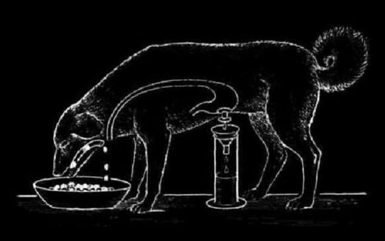

Когда я приступаю к опыту, связанному в конце с гибелью животного,
я испытываю тяжёлое чувство сожаления, что прерываю ликующую жизнь,
что являюсь палачом живого существа.
Когда я режу, разрушаю живое животное, я глушу в себе едкий упрёк,
что грубой, невежественной рукой ломаю невыразимо художественный механизм.
Иван Петрович Павлов